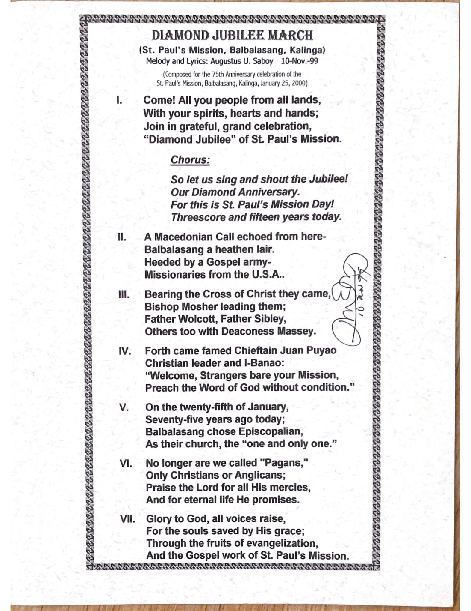
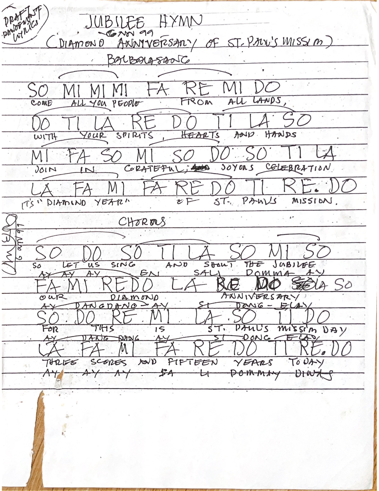

TUVYAN / Music Archive / Historical composition
Diamond Jubilee March
Melody and lyrics by Augustus U. Saboy
Original documents
These images reproduce the archival lyrics sheet and musical notation. Select an image to open it at full resolution.




Reading transcription of the lyrics
Transcribed from the family source for accessibility. Punctuation and historical wording are substantially retained; compare against the facsimile for authoritative reading. The lyrics reflect the historical context and language of the original composition.
I
Come! All you people from all lands,
With your spirits, hearts and hands;
Join in grateful, grand celebration,
“Diamond Jubilee” of St. Paul’s Mission.
Chorus
So let us sing and shout the Jubilee!
Our Diamond Anniversary.
For this is St. Paul’s Mission Day!
Threescore and fifteen years today.
II
A Macedonian Call echoed from here—
Balbalasang a heathen lair.
Heeded by a Gospel army—
Missionaries from the U.S.A..
III
Bearing the Cross of Christ they came,
Bishop Mosher leading them;
Father Wolcott, Father Sibley,
Others too with Deaconess Massey.
IV
Forth came famed Chieftain Juan Puyao
Christian leader and I-Banao:
“Welcome, Strangers bare your Mission,
Preach the Word of God without condition.”
V
On the twenty-fifth of January,
Seventy-five years ago today;
Balbalasang chose Episcopalian,
As their church, the “one and only one.”
VI
No longer are we called “Pagans,”
Only Christians or Anglicans;
Praise the Lord for all His mercies,
And for eternal life He promises.
VII
Glory to God, all voices raise,
For the souls saved by His grace;
Through the fruits of evangelization,
And the Gospel work of St. Paul’s Mission.
Editorial status
The scanned notation has not been transcribed or checked note for note. This archival page does not claim to provide a performance-ready modern score or a recording.